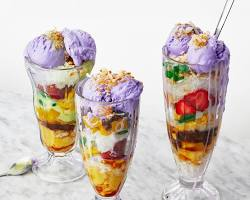

INGREDIENTS
- 1 cup shaved ice (or crushed ice)
- 1/2 cup evaporated milk
- 1/4 cup sweetened condensed milk (optional)
- Ube halaya (purple yam jam)
- Leche flan (custard)
- Saba (plantains) caramelized or sweetened
- Kaong (preserved red fruit)
- Macapuno (shredded coconut)
- Pinipig (roasted rice flakes)
- Sago pearls
- Sweet beans (mung beans, red beans, etc.)
- Corn kernels
- Ice cream (vanilla, ube, or other flavors)
|

|
PROCEDURE
- Prepare the base: In a tall glass, layer the shaved ice evenly. Drizzle with evaporated milk and condensed milk (if using) until desired sweetness is achieved.
- Add toppings: Choose your desired combination of sweet and savory toppings, adding them in layers on top of the shaved ice and milk. Aim for a visually appealing and diverse mixture.
- Mix and enjoy!: Use a long spoon to mix all the ingredients together before digging in. The beauty of halo-halo lies in the unique taste and texture combinations with each bite.
|